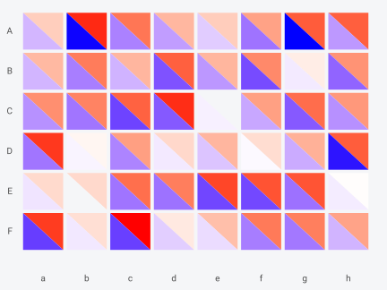
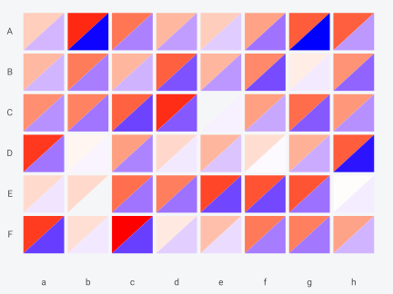
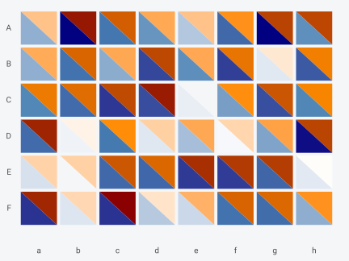
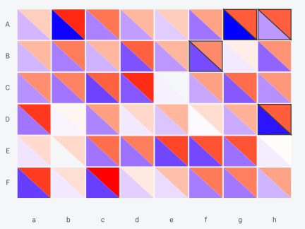
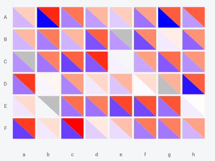
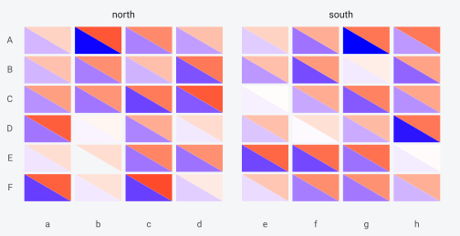
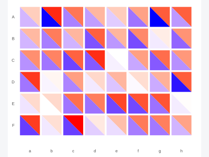
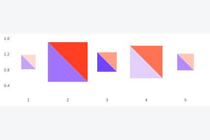
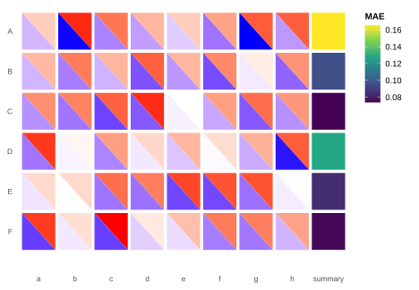
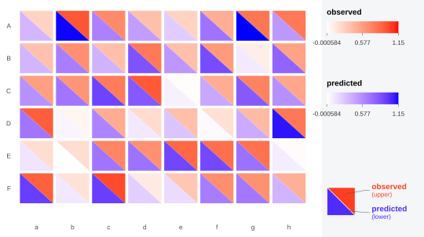

Installation
# install.packages("remotes")
remotes::install_github("gcol33/BiHeat")biheat() takes two matrices and returns a finished
figure. geom_biheat() draws the same split cells as a
ggplot2 layer, from a long data frame, inside a plot you build yourself.
Faceting, coordinate systems, other layers, and any theme are then
available in the usual way.
The data shape
The layer wants one row per cell, with the two values in their own columns:
set.seed(1)
species <- LETTERS[1:6]
sites <- letters[1:8]
observed <- matrix(runif(48), 6, 8, dimnames = list(species, sites))
predicted <- observed + matrix(rnorm(48, sd = 0.15), 6, 8,
dimnames = list(species, sites))
cells <- comes_out(breed(observed, predicted))
head(cells)
#> <biheat_data> 6 cells (6 x 8)
#> upper = observed
#> lower = predicted
#> row col i j upper lower
#> 1 A a 1 1 0.2655087 0.3584825
#> 2 B a 2 1 0.3721239 0.3637046
#> 3 C a 3 1 0.5728534 0.5494840
#> 4 D a 4 1 0.9082078 0.6875949
#> 5 E a 5 1 0.2016819 0.1299594
#> 6 F a 6 1 0.8983897 0.9610809comes_out() is a convenient source when the data started
as matrices, and any long table works. Reshaping from two matrices by
hand takes one call:
manual <- expand.grid(site = sites, species = species,
stringsAsFactors = FALSE)
manual$observed <- as.vector(t(observed))
manual$predicted <- as.vector(t(predicted))
head(manual, 3)
#> site species observed predicted
#> 1 a A 0.2655087 0.3584825
#> 2 b A 0.9446753 1.1484772
#> 3 c A 0.6870228 0.6278794Four required aesthetics
x, y, upper, and
lower are required. The first two place the cell, the last
two fill its triangles:
ggplot(cells, aes(col, row, upper = upper, lower = lower)) +
geom_biheat() +
theme_biheat()
Rows come out in the alphabetical order a discrete axis gives them,
running bottom to top. Reversing the factor levels puts the first
species at the top, matching the matrix layout biheat()
produces:
cells$site <- factor(cells$col, levels = sites)
cells$species <- factor(cells$row, levels = rev(species))
ggplot(cells, aes(site, species, upper = upper, lower = lower)) +
geom_biheat() +
theme_biheat()
split flips the diagonal, as it does elsewhere in
BiHeat:
ggplot(cells, aes(site, species, upper = upper, lower = lower)) +
geom_biheat(split = "up") +
theme_biheat()
Colour ranges
The layer carries its own pair of palettes and maps values to colours
itself. Each triangle is stretched across the range of its own data by
default, which is the scale = "separate" behaviour of
biheat(). upper_range and
lower_range set those ranges explicitly, and passing the
same range to both gives a shared scale:
shared <- range(c(cells$upper, cells$lower))
ggplot(cells, aes(site, species, upper = upper, lower = lower)) +
geom_biheat(upper_range = shared, lower_range = shared) +
theme_biheat()
Fixing the ranges is what makes several panels comparable. Facets computed from the data alone would each get their own range, and a cell in one panel would then mean something different from the same colour in the next.
Values outside a supplied range are clamped to the nearest end rather than dropped, so a range chosen for the bulk of the data still draws every cell.
Palettes work as they do in incubate(), taking a
palettes() object or a bare vector with
lower_palette:
ggplot(cells, aes(site, species, upper = upper, lower = lower)) +
geom_biheat(palettes = palettes(c("white", "darkorange", "darkred"),
c("white", "steelblue", "navy"))) +
theme_biheat()Cell geometry and outlines
cell_inset opens a gap between neighbours, and
colour with linewidth outlines each triangle.
Both are the same controls incubate() exposes, and
colour is an aesthetic here, so it can vary per cell:
ggplot(cells, aes(site, species, upper = upper, lower = lower)) +
geom_biheat(cell_inset = 0, colour = "white", linewidth = 0.4) +
theme_biheat()
The full set of aesthetics:
| Aesthetic | Role |
|---|---|
x, y
|
Cell centre. Required. |
upper, lower
|
The two values. Required. |
width, height
|
Cell footprint. Defaults to the resolution of the positions. |
colour, linewidth,
linetype
|
Triangle outline. |
alpha |
Triangle opacity. |
colour, linewidth, linetype,
and alpha behave as they do in any ggplot2 layer, settable
as constants in the call or mapped through aes(). The fills
are the exception, since the layer resolves them from upper
and lower against the palettes rather than through a
scale.
Mapping colour marks a subset without disturbing the
fills:
cells$flagged <- abs(cells$upper - cells$lower) > 0.25
ggplot(cells, aes(site, species, upper = upper, lower = lower)) +
geom_biheat(aes(colour = flagged), cell_inset = 0.02, linewidth = 0.6) +
scale_colour_manual(values = c(`TRUE` = "black", `FALSE` = NA),
guide = "none") +
theme_biheat()
Missing values
A missing value belongs to one triangle. The layer keeps the cell,
draws the half it has, and fills the other with na_colour.
Only a missing position drops a cell entirely.
gappy <- cells
gappy$upper[c(3, 11, 26)] <- NA
gappy$lower[40] <- NA
ggplot(gappy, aes(site, species, upper = upper, lower = lower)) +
geom_biheat(na_colour = "grey75") +
theme_biheat()
Faceting
Faceting is the reason to reach for the layer. Splitting a model comparison by group, with a range fixed across panels so the colours mean the same thing in each:
cells$region <- ifelse(cells$col %in% letters[1:4], "north", "south")
ggplot(cells, aes(site, species, upper = upper, lower = lower)) +
geom_biheat(upper_range = shared, lower_range = shared) +
facet_wrap(~region, scales = "free_x") +
theme_biheat()
coord_fixed() keeps the cells square whatever the panel
dimensions:
ggplot(cells, aes(site, species, upper = upper, lower = lower)) +
geom_biheat() +
coord_fixed() +
theme_biheat()
Continuous axes
Nothing requires a discrete axis. With numeric x and
y the cell footprint comes from the resolution of the
positions, which is the smallest gap between them, so cells stay square
and evenly sized however the positions are spread.
width and height override that per cell,
which lets the footprint carry a third variable. Sizing each cell by how
much data went into it:
transects <- data.frame(
x = c(1, 2, 3, 4, 5),
y = rep(1, 5),
upper = c(0.2, 0.9, 0.5, 0.7, 0.3),
lower = c(0.4, 0.6, 0.8, 0.2, 0.5),
n = c(5, 40, 12, 30, 8)
)
ggplot(transects, aes(x, y, upper = upper, lower = lower)) +
geom_biheat(aes(width = 0.3 + n / 50, height = 0.3 + n / 50),
upper_range = c(0, 1), lower_range = c(0, 1)) +
coord_fixed() +
theme_biheat()
The two small cells came from a handful of observations, and the
split inside them is worth less than the split inside the large ones.
The ranges are anchored at c(0, 1) here rather than left to
the data, which keeps the smallest value off the white end of each
palette; a triangle drawn in the palette’s first colour is easy to
mistake for an absent one. A continuous axis also lets cells sit at real
coordinates, so a grid of sites with known positions keeps its
geometry.
Layers on top
The cells are polygons in a normal panel, so anything else can be drawn over them. Labelling the cells where the two matrices disagree most:
worst <- cells[order(-abs(cells$upper - cells$lower)), ][1:5, ]
worst$gap <- round(worst$upper - worst$lower, 2)
ggplot(cells, aes(site, species, upper = upper, lower = lower)) +
geom_biheat() +
geom_text(data = worst, aes(site, species, label = gap),
size = 2.8, fontface = "bold", inherit.aes = FALSE) +
theme_biheat()geom_point(), geom_segment(), and
annotations work the same way. Setting inherit.aes = FALSE
on the added layer keeps it from inheriting upper and
lower, which it has no use for.
The fill scale stays free
Neither triangle consumes ggplot2’s fill scale, which
leaves it for another layer. Here a column of per-species mean error
sits beside the heatmap, on its own continuous fill scale:
margin <- data.frame(
site = factor("summary", levels = c(levels(cells$site), "summary")),
species = factor(species, levels = rev(species)),
mae = as.vector(tapply(abs(cells$upper - cells$lower), cells$row, mean))
)
cells$site <- factor(cells$col, levels = levels(margin$site))
ggplot(mapping = aes(site, species)) +
geom_biheat(data = cells, aes(upper = upper, lower = lower)) +
geom_tile(data = margin, aes(fill = mae), width = 0.92, height = 0.92) +
scale_fill_viridis_c(name = "MAE") +
theme_biheat()
The same freedom applies to colour, size,
and any other scale the layer does not touch, so points, labels, and
segments can be added over the cells.
Layer plumbing
stat and position are the standard ggplot2
layer arguments and default to "identity", which is what a
heatmap wants: one row of data becomes one cell, at the position given.
data and mapping behave as in any layer, so
several geom_biheat() calls can draw different subsets with
different palettes in one panel.
show.legend is accepted for consistency with other
layers. Since the fills never pass through a scale there is no key for
ggplot2 to draw, which is why bi_legend() exists.
Each cell becomes two polygons of three vertices, so a 50 by 50 grid is 5,000 polygons and 15,000 vertices. That draws quickly to a raster device, and vector output grows with the same count, so an SVG or PDF of a large grid gets heavy. Rasterising just this layer is worth considering past a few thousand cells.
A legend of your own
geom_biheat() draws no legend, since the colours never
pass through a scale. bi_legend() builds the paired key as
a standalone grob, and base grid places it next to the panel:
panel <- ggplot(cells, aes(site, species, upper = upper, lower = lower)) +
geom_biheat(upper_range = shared, lower_range = shared) +
theme_biheat()
key <- bi_legend("observed", "predicted",
upper_range = shared,
lower_range = shared)
grid::grid.newpage()
grid::pushViewport(grid::viewport(
layout = grid::grid.layout(1, 2, widths = grid::unit(c(1, 4.6),
c("null", "cm")))
))
grid::pushViewport(grid::viewport(layout.pos.col = 1))
grid::grid.draw(ggplotGrob(panel))
grid::popViewport()
grid::pushViewport(grid::viewport(layout.pos.col = 2))
grid::grid.draw(key)
grid::popViewport(2)
Pass bi_legend() the same ranges the layer used and the
ticks describe the colours on screen. Its split argument
should match the layer’s, so the glyph shows the diagonal that was
drawn.
Which entry point
biheat() covers the case where two matrices go in and
one figure comes out, with alignment, comparison statistics, and the
legend handled. geom_biheat() covers everything that needs
the rest of ggplot2: facets, a second layer, a coordinate system, a
theme applied across a set of figures, or a panel that is one piece of a
larger composition.
The practical differences:
biheat() |
geom_biheat() |
|
|---|---|---|
| Input | Two matrices | One long data frame |
| Alignment on dimnames | Done by breed()
|
Yours to do |
| Comparison statistics | On the clutch | Compute from the table |
| Colour ranges |
scale = "separate" or "shared"
|
upper_range, lower_range
|
| Legend | Drawn, with the key glyph |
bi_legend(), placed by you |
| Return | A gtable, or a ggplot without the key | Always a ggplot layer |
| Facets, extra layers, coords | Through show_key = FALSE
|
Directly |
Going from matrices to the layer takes one call, since
comes_out() returns exactly the table the layer wants. A
workflow can start with biheat() for a first look, then
move to the layer when the figure needs facets or a companion panel.
They share the drawing code, so a plot built either way puts the same triangles in the same places.
Where to go next
vignette("biheat")covers the clutch, alignment, and the lifecycle.vignette("styling")covers palettes, cell geometry, ordering, and the legend asincubate()options.